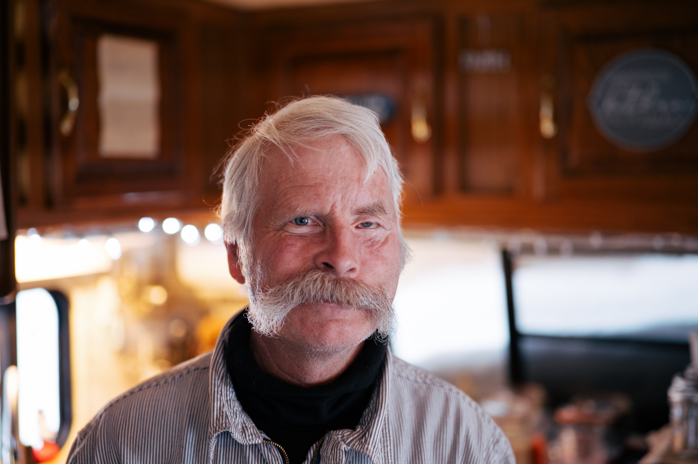

05 / About us
Steve Braun
A master of his trade.
Steve Braun learned to scribe logs from his grandfather at age five. At seventeen, he built his first cabin in the Gallatin Range, cutting and fitting the logs by hand.
He still works that way today. Steve peels and cuts each log himself. He uses a hand-cut dovetail joint his grandfather taught him, along with saddle notches when a project calls for them.
Most log homes are built from milled kits or machine-cut parts. Steve keeps this older method alive. It takes more time, but it lets him fit the home to the logs instead of making the logs fit a kit.
He has built homes across the continental United States from coast to coast, as well as on remote Alaskan islands.
Work with Braun Log Homes